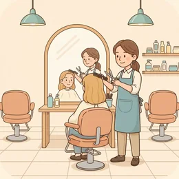

deutschoderwas · Sprechclub · Woche 9 · Strang A · Teil 1 · Montag, 9. November
Beim Friseur und im Laden: Sagen, was man will — genau
Es gibt Situationen, in denen ein ungefähres Deutsch teuer wird. Beim Friseur zum Beispiel: Bitte etwas kürzer und bitte kurz sind zwei völlig verschiedene Frisuren. Oder im Laden, wenn du die falsche Größe mitnimmst, weil du nicht gefragt hast. Heute üben wir das Genaue — mit Farben, Längen, Größen und den Endungen, die dazugehören.
Gleiches Thema, andere Sätze. Wechsle jederzeit — probier ruhig beide Seiten aus.
Erst mal ankommen
Eine Frage, ein Satz pro Person. Reihum.
Wann warst du zuletzt beim Friseur?
Was ist schon einmal schiefgegangen, weil du zu ungenau warst?
🆘 Wie fange ich an?
Bei mir war das so: …Ich habe einmal …Ich glaube, das ist …
Bei mir war das so: …Ehrlich gesagt habe ich das noch nie …Mir fällt spontan ein Fall ein, in dem …
Vier Situationen — zwei Runden
1Runde 1: Lest den Dialog zu zweit laut.
2Runde 2: Klappt die Zeilen zu und sprecht frei — nur die Stichwörter bleiben.
Dialog 1 · „Der Termin am Telefon“
B ruft im Salon an. Kurz, konkret, mit zwei Alternativen — so klappt es beim ersten Anruf.
A
Salon Wagner, guten Tag.
B
Guten Tag, mein Name ist Nadia Karim. Ich hätte gern einen Termin zum Schneiden, am liebsten Donnerstag- oder Freitagnachmittag.
🗣️ Name, Anliegen, zwei mögliche Zeiten. Wer gleich zwei nennt, bekommt fast immer einen davon.tippen = Hilfe zeigen
A
Donnerstag um 15:30 hätte ich noch etwas frei.
B
Das passt. Nur schneiden, kein Färben — reichen dafür dreißig Minuten?
🗣️ Sag gleich, was gemacht werden soll. Das entscheidet über die Dauer und über den Preis.tippen = Hilfe zeigen
A
Ja, das reicht. Waschen ist dabei.
B
Sehr gut. Donnerstag, 15:30, auf den Namen Karim — ich bin da.
🗣️ Termin wiederholen. Zwei Sekunden, und niemand steht am Donnerstag falsch da.tippen = Hilfe zeigen

Dialog 2 · „Im Stuhl“
Die Friseurin fragt, was gemacht werden soll. B beschreibt genau — mit Zahl und Grenze.
A
So, was machen wir heute?
B
Die Länge möchte ich behalten. Nur die Spitzen, etwa zwei Zentimeter — und vorne den Pony ein bisschen kürzer.
🗣️ Erst die Grenze (Länge behalten), dann die Zahl. Zwei Sätze, und das Ergebnis ist verabredet.tippen = Hilfe zeigen
A
Und die Stufen? Sollen die bleiben?
B
Ja, gern so wie jetzt. Ich habe ein Foto von letztem Mal, wenn Sie möchten.
🗣️ Das Foto anbieten, statt lange zu beschreiben. In jedem Salon völlig normal — und schneller als jedes Fachwort.tippen = Hilfe zeigen
A
Sehr gerne, das hilft mir.
B
Und falls Sie unsicher sind: lieber einen Zentimeter weniger als einen zu viel.
🗣️ Die schönste Sicherheitsregel beim Friseur. Wegnehmen kann man später, dazutun nicht.tippen = Hilfe zeigen
Dialog 3 · „Im Laden“
B sucht etwas Bestimmtes und sagt es gleich vollständig. Die Verkäuferin muss nichts erfragen.
A
Kann ich Ihnen helfen?
B
Ja, gern. Ich suche ein hellblaues Hemd in Größe 40, am liebsten aus Baumwolle.
🗣️ Farbe, Größe, Material — drei Angaben in einem Satz. Beachte die Endung: ein hellblaues Hemd, weil das Hemd sächlich ist.tippen = Hilfe zeigen
A
Da hätte ich zwei. Dieses hier ist reine Baumwolle, das andere mit Leinen.
B
Das reine nehme ich zum Anprobieren. Läuft das beim Waschen ein?
🗣️ Eine praktische Frage, bevor du kaufst. einlaufen ist genau das Wort dafür — und die Antwort entscheidet über die Größe.tippen = Hilfe zeigen
A
Bei 30 Grad nicht. Die Kabinen sind da hinten links.
B
Danke. Könnten Sie es mir vorsichtshalber auch in 41 bereitlegen?
🗣️ Zwei Größen kommen lassen, statt sich zweimal anzuziehen. Das macht jeder — und die Verkäuferin erwartet es.tippen = Hilfe zeigen
Dialog 4 · „In der Kabine“
Es passt fast. B sagt genau, woran es liegt — und fragt nach dem Umtausch, bevor gezahlt wird.
A
Und, passt es?
B
Fast. Die Schultern sitzen gut, aber die Ärmel sind mir zwei Zentimeter zu lang.
🗣️ Sag, was passt und was nicht. Nur so kann die Verkäuferin ein anderes Modell finden statt nur eine andere Größe.tippen = Hilfe zeigen
A
Dann probieren Sie mal die 39, die fällt etwas schmaler aus.
B
Die passt tatsächlich besser. Die nehme ich.
🗣️ Kurz entscheiden. Die nehme ich ist der Standardsatz an der Kasse — nicht ich will das kaufen.tippen = Hilfe zeigen
A
Sehr gern. Zahlen Sie mit Karte?
B
Ja. Und könnte ich den Kassenbon behalten — falls ich es doch umtauschen möchte?
🗣️ Vor dem Bezahlen an den Umtausch denken. Genau darum geht es am Mittwoch: ohne Bon kein Umtausch.tippen = Hilfe zeigen
🎭 Und jetzt ihr: Spielt Dialog 3 mit einem Kleidungsstück, das ihr wirklich sucht. Regel: In jedem Wunsch müssen ein Adjektiv mit Endung und eine Zahl vorkommen.
⏱️ Die 90-Sekunden-Challenge
Neunzig Sekunden: Beschreib etwas, das du kaufen möchtest — mit Farbe, Größe und einem Detail. Und sag dazu, was auf keinen Fall passieren soll.
Dein Wort
der Termin
1:30
Vier Sätze, dann trägt dich die Zeit:
Was:Ich suche einen Mantel für den Winter.
Die Angaben:Dunkelgrau, Größe 40, am liebsten aus Wolle.
Die Grenze:Aber nicht länger als bis zum Knie.
Die Frage:Haben Sie so etwas da?
Und wenn dir die Endung fehlt, gibt es einen Ausweg, den alle benutzen: Stell die Farbe hinter das Nomen. „Einen Mantel in Dunkelgrau, Größe 40.“ Kein Adjektiv, keine Endung, dieselbe Information.
⏱️ Spielregel: In jeder Runde müssen zwei Adjektive mit Endung und eine Zahl vorkommen. Wer nur schön oder gut sagt, fängt noch einmal an.
🎭 Drei Situationen zu zweit
1Einer bedient, einer möchte etwas.
2Danach tauschen — und beim zweiten Mal ohne die Sätze unten.
!Regel: In jedem Wunsch mindestens ein Adjektiv mit Endung und eine Zahl.
1Beim Friseur
Die LageA ist Friseurin, B möchte die Länge behalten und nur nachschneiden lassen. Zwischendurch fragt A, ob es so passt.
Sätze, die dir helfen
Ich möchte nur die Spitzen, etwa zwei ZentimeterDie Länge möchte ich behaltenVorne bitte etwas kürzerSo ist es gut, vielen Dank
Die Länge bleibt, nur nachschneiden — höchstens zwei ZentimeterWenn Sie unsicher sind, lieber weniger als zu vielVorne ist es mir noch etwas zu lang, könnten Sie da einen Zentimeter nehmen?Was würden Sie mir für den Winter raten?
🎯 Geschafft, wennB hat eine Zahl und eine Grenze genannt und sich zwischendurch getraut zu korrigieren. Am Ende gab es keine Überraschung im Spiegel.
🆘 Und wenn B nein sagt?
Das verstehe ich. Aber …Kann ich bitte fragen: …?Was kann ich jetzt machen?
Das verstehe ich — trotzdem bleibe ich dabei: …Darf ich kurz nachfragen: …?Wer kann das denn entscheiden?
2Im Bekleidungsgeschäft
Die LageA verkauft, B sucht etwas Bestimmtes: Farbe, Größe, Material stehen schon fest. Es passt fast — nur eine Kleinigkeit stimmt nicht.
Sätze, die dir helfen
Ich suche ein hellblaues Hemd in Größe 40Haben Sie das auch eine Nummer größer?Wo kann ich das anprobieren?Die Ärmel sind mir zu lang
Ich suche ein schlichtes Hemd aus Baumwolle, hellblau, Größe 40Läuft das beim Waschen ein?Könnten Sie es mir vorsichtshalber auch in 41 bereitlegen?Die Schultern sitzen gut, aber die Ärmel sind zwei Zentimeter zu lang
🎯 Geschafft, wennB hat drei Angaben von allein genannt und beim Anprobieren gesagt, was passt und was nicht. A musste nichts erraten.
🆘 Und wenn B nein sagt?
Das verstehe ich. Aber …Kann ich bitte fragen: …?Was kann ich jetzt machen?
Das verstehe ich — trotzdem bleibe ich dabei: …Darf ich kurz nachfragen: …?Wer kann das denn entscheiden?
3Kurz vor der Kasse
Die LageB ist unsicher, ob es die richtige Größe ist, und will vor dem Bezahlen die Bedingungen klären.
Sätze, die dir helfen
Kann ich das umtauschen?Wie lange habe ich Zeit?Brauche ich den Kassenbon?Bekomme ich Geld zurück oder einen Gutschein?
Falls es doch nicht passt — bis wann könnte ich es umtauschen?Gilt das auch für reduzierte Ware?Muss es ungetragen sein, oder reicht das Etikett?Und bekomme ich den Betrag zurück oder einen Gutschein?
🎯 Geschafft, wennB hat vor dem Bezahlen gefragt statt danach — und weiß jetzt genau, unter welchen Bedingungen ein Umtausch möglich ist. Genau das brauchen wir am Mittwoch.
🆘 Und wenn B nein sagt?
Das verstehe ich. Aber …Kann ich bitte fragen: …?Was kann ich jetzt machen?
Das verstehe ich — trotzdem bleibe ich dabei: …Darf ich kurz nachfragen: …?Wer kann das denn entscheiden?
🎴 Sprechkarten
Zieh eine Karte. Vier Sätze am Stück.
Deine Aufgabe
Tippe auf den Knopf.
Drei gegen drei
Zwei Gruppen, eine Frage. Abwechselnd sprechen.
Zum Friseur nimmt man ein Foto mit.
Gruppe A · dafür
Kurz heißt für jeden etwas anderes.
Man braucht keine Fachwörter.
Beide sehen vorher dasselbe.
Gruppe B · dagegen
Fremde Haare sind anders als die eigenen.
Ein Bild sagt nichts über die Pflege danach.
Ein gutes Gespräch bringt mehr.
Zum Schluss
Ein Satz von jedem.
Welchen Satz von heute nimmst du mit — und wo brauchst du ihn?
🆘 Wie fange ich an?
Ich nehme mit: …Ich will den Satz „…“ benutzen.Neu war für mich: …
Ich nehme mit, dass …Den Satz „…“ will ich nächste Woche wirklich benutzen.Neu war für mich, dass …
📮 Deine Hausaufgabe bis Mittwoch
Vier kleine Aufgaben, zusammen etwa 25 Minuten. Am Mittwoch geht es weiter: Was tun, wenn es doch nicht passt — reklamieren und umtauschen.
💡 Warum das hilft: Adjektivendungen sind das, woran man im Deutschen am längsten arbeitet — und gleichzeitig das, was man am schnellsten üben kann, weil sie in jedem Einkauf vorkommen. Zehn Sätze am Tag, und nach zwei Wochen kommt die Endung von allein.
0 von 0 Aufgaben geschafft.
So wird aus einem vagen Wunsch ein genauer:
Ich suche eine Jacke. → Ich suche eine dunkelblaue Jacke in Größe 40, ohne Kapuze.
Ich brauche Schuhe. → Ich brauche schwarze Schuhe in Größe 42, am liebsten aus Leder.
Bitte kurz schneiden. → Bitte etwa zwei Zentimeter, die Länge möchte ich behalten.
Haben Sie Hemden? → Haben Sie ein hellblaues Hemd in Größe 40 aus Baumwolle?
Etwas Warmes bitte. → Eine warme Mütze in Grau, gern aus Wolle.
Ein einziger Test: Könnte jemand das falsch verstehen? Wenn ja, fehlt eine Angabe — meistens die Zahl.
So ist eine Anzeige aufgebaut, auf die sich jemand meldet:
Was es ist:Verkaufe einen dunkelgrauen Wintermantel.
Größe und Maße:Größe 40, Länge bis zum Knie, Ärmel 62 cm.
Material:70 Prozent Wolle, gefüttert.
Zustand: ehrlich. Zweimal getragen, kleiner Fleck am linken Ärmel.
Preis und Abholung:45 Euro, Abholung in Hagen oder Versand.
Und der Fehler, den fast alle machen: Superlative statt Maße. Sehr schöner Mantel sagt nichts. Ärmel 62 cm sagt alles — und verhindert den Umtausch.
📬 Abgabe: Schick deine Sprachnachricht und die zehn Sätze bis Dienstagabend in den Chat. Ich höre alles an und schreibe dir zurück, welche Endungen schon sitzen.
🔜 Am Mittwoch, Teil 2:Es ist anders geworden — reklamieren. Der Pullover ist beim Waschen eingelaufen, die Farbe ist nicht die vom Foto, die Frisur ist kürzer als besprochen. Wir üben, wie man das sagt, ohne unfreundlich zu werden.